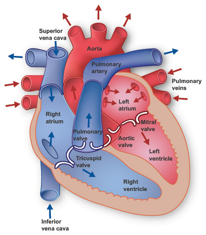

Süda on inimese üks tähtsamaid elundeid ja selle peamine ülesanne on pumbata verd kogu kehas. Veri kannab organismis hapnikku ja toitaineid ning aitab eemaldada jääkaineid. Inimese süda koosneb neljast kambrist: kahest kojast ja kahest vatsakesest. Täiskasvanud inimese süda lööb puhkeolekus tavaliselt umbes 60–100 korda minutis. Süda töötab pidevalt kogu inimese elu jooksul ja varustab keha elundite ning kudede tööks vajaliku verega.